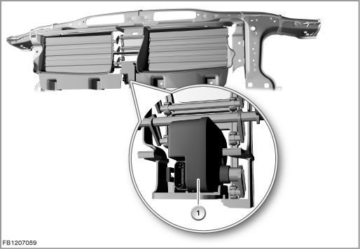

Engine Cooling
Active air flap control
Active air flap control regulates the air supply for the engine and assemblies cooling system by only opening the radiator shutter as it is needed.
Up to 2 radiator shutters can be installed in the front end.
Conditional on the present design envelope, the engine version and the engine management system, there are the following versions of the air flap control:
- Active air flap control via actuator motor (radiator shutter drive)
- Active and passive air flap control (radiator shutter drive for the upper radiator shutter and electromagnet for the lower radiator shutter)
The required design envelope for the active air flap control means that it cannot be combined on some models with certain optional extras (e.g. Sports package, active steering or active cruise control). The control system for the lower radiator shutter must be eliminated in some models with turbocharging.
The illustration shows the upper and lower radiator shutter in the E90.
The engine management system continuously calculates the required cooling output and only opens the radiator shutter when an increased cooling air volume is really required.
While the vehicle is being driven, the closed radiator shutter reduces the warm-up phase of the engine, as operating temperature is reached more quickly if the environment is better encapsulated.
The air flow through the radiator creates high aerodynamic drag as the driving speed increases. In higher road speed ranges, the closed radiator shutter improves the aerodynamics. This reduces fuel consumption and thus the emission value.
Components
The following components are described for the air flap control:
Radiator shutter drive unit
The radiator shutter drive is an actuator motor. The radiator shutter drive is connected to an adjustment mechanism. The adjustment mechanism moves the individual fins of the radiator shutter to the relevant position.
The radiator shutter has 2 positions:
- Radiator shutter closed
- Radiator shutter opened

The illustration shows the radiator shutter drive on the E90.
Electromagnet for radiator shutter
The electromagnet has the task of closing the radiator shutter or holding it closed.
The illustration shows the lower radiator shutter in the E60.
System functions
The following system functions are described for the air flap control:
- Passive air flap control via electromagnet
- Active air flap control via actuator motor (radiator shutter drive)
Passive air flap control via electromagnet
The electromagnet is switched on by a switch signal from the control electronics circuit of the radiator shutter drive. The engine management system activates the control electronics circuit.
If there is voltage at the electromagnet, the radiator shutter is closed and held this position.
When power is disconnected from the electromagnet, the radiator shutter opens while the vehicle is being driven due to the air stream. When the vehicle is at a standstill or is moving slowly, the radiator shutter is opened by the air flow of the intake radiator fan.
Active air flap control via actuator motor (radiator shutter drive)
The radiator shutter drive is activated by the DME (Digital Engine Electronics) or DDE (Digital Diesel Electronics) by means of a pulse-width modulated (PWM) signal. The radiator shutter drive is supplied with voltage via terminal 87.
Notes for Service department
If an electrical fault occurs in the air flap control, only the lock of the lower radiator shutter is cancelled (passive air flap control via electromagnet). The radiator shutter drive for the upper radiator shutter (active air flap control via actuator motor) remains in the position it was in when the fault occurred.
The radiator shutter lock is also deactivated if a defect is detected at the coolant-temperature sensor or electric fan.
Warning: Only perform work on the air flap and the air flap control with the engine switched off.
Work may only be carried out on the air flap control system (in particular checking the air flaps for stiff movement) with the engine switched off. There is a risk of injury.
Switch-on conditions
The active and passive air flap control is active as of terminal 15.
The following evaluation criteria are used for the air flap control:
- Coolant temperature (engine temperature sensor and temperature sensor at the radiator outlet)
- Transmission oil temperature
- Engine oil temperature
- Application of current to the map thermostat
- Engine load signal
- Engine speed
- Road speed
- Speed of the radiator fan
- Trailer detection
No liability can be accepted for printing or other faults. Subject to changes of a technical nature